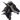

IL FERRO SPEZZATO - QUEST NECRO - Monastero Fogne
21:14 SiannaLeFair
SiannaLeFair  [Ivarheim - zona sud ovest] La luna è nascosta dietro nubi immobili e illumina parzialmente il monastero che incombe davanti a loro sopra all’altura circondata da alte querce. La Fenice Nera si muove nella radura con l’andatura silenziosa di chi appartiene alle ombre della notte; la casacca scura in pelle morbida aderisce al corpo minuto, le cuciture quasi invisibili, i calzoni fasciati dentro gli stivali consumati e silenziosi. La cappa color terra, sporca volontariamente di erba, fango e foglie spezza la sua forma, la confonde con il sottobosco. I capelli corvini sono raccolti in una treccia stretta, nascosta sotto il cappuccio; non indossa il suo abituale profumo. Le dita guantate accarezzano appena un ramo mentre si abbassa, osservando il perimetro sud-ovest del monastero. Le sentinelle sono lontane, troppo lontane per scorgere lei, il drago nero e il flagello. La feriva si volta e rivolge loro lo sguardo e poche parole sussurrate”. “Il respiro della terra è diverso qui, lo percepisco anche se non chiaramente, qualcosa sotto queste pietre aspetta. E non credo sia un’attesa benevola”. La sua voce è bassa, vellutata, quasi un soffio che si mescola al fruscio delle foglie. La mano guantata si solleva appena, in un gesto che invita Euridas a guardare qualcosa davanti a loro, nascosto fra la vegetazione e lungo il perimetro della radura stessa. “Flagello avete notizie dai ranger inviati in avanscoperta?” per poi osservare i due paladini e il loro volto nella notte “cosa vedono mio sposo i tuoi occhi?”.
[Ivarheim - zona sud ovest] La luna è nascosta dietro nubi immobili e illumina parzialmente il monastero che incombe davanti a loro sopra all’altura circondata da alte querce. La Fenice Nera si muove nella radura con l’andatura silenziosa di chi appartiene alle ombre della notte; la casacca scura in pelle morbida aderisce al corpo minuto, le cuciture quasi invisibili, i calzoni fasciati dentro gli stivali consumati e silenziosi. La cappa color terra, sporca volontariamente di erba, fango e foglie spezza la sua forma, la confonde con il sottobosco. I capelli corvini sono raccolti in una treccia stretta, nascosta sotto il cappuccio; non indossa il suo abituale profumo. Le dita guantate accarezzano appena un ramo mentre si abbassa, osservando il perimetro sud-ovest del monastero. Le sentinelle sono lontane, troppo lontane per scorgere lei, il drago nero e il flagello. La feriva si volta e rivolge loro lo sguardo e poche parole sussurrate”. “Il respiro della terra è diverso qui, lo percepisco anche se non chiaramente, qualcosa sotto queste pietre aspetta. E non credo sia un’attesa benevola”. La sua voce è bassa, vellutata, quasi un soffio che si mescola al fruscio delle foglie. La mano guantata si solleva appena, in un gesto che invita Euridas a guardare qualcosa davanti a loro, nascosto fra la vegetazione e lungo il perimetro della radura stessa. “Flagello avete notizie dai ranger inviati in avanscoperta?” per poi osservare i due paladini e il loro volto nella notte “cosa vedono mio sposo i tuoi occhi?”.
SiannaLeFair [Ivarheim - zona sud ovest] La luna è nascosta dietro nubi immobili e illumina parzialmente il monastero che incombe davanti a loro sopra all’altura circondata da alte querce. La Fenice Nera si muove nella radura con l’andatura silenziosa di chi appartiene alle ombre della notte; la casacca scura in pelle morbida aderisce al corpo minuto, le cuciture quasi invisibili, i calzoni fasciati dentro gli stivali consumati e silenziosi. La cappa color terra, sporca volontariamente di erba, fango e foglie spezza la sua forma, la confonde con il sottobosco. I capelli corvini sono raccolti in una treccia stretta, nascosta sotto il cappuccio; non indossa il suo abituale profumo. Le dita guantate accarezzano appena un ramo mentre si abbassa, osservando il perimetro sud-ovest del monastero. Le sentinelle sono lontane, troppo lontane per scorgere lei, il drago nero e il flagello. La feriva si volta e rivolge loro lo sguardo e poche parole sussurrate”. “Il respiro della terra è diverso qui, lo percepisco anche se non chiaramente, qualcosa sotto queste pietre aspetta. E non credo sia un’attesa benevola”. La sua voce è bassa, vellutata, quasi un soffio che si mescola al fruscio delle foglie. La mano guantata si solleva appena, in un gesto che invita Euridas a guardare qualcosa davanti a loro, nascosto fra la vegetazione e lungo il perimetro della radura stessa. “Flagello avete notizie dai ranger inviati in avanscoperta?” per poi osservare i due paladini e il loro volto nella notte “cosa vedono mio sposo i tuoi occhi?”.Euridas ti sussurra: //tg
21:29 Euridas [Ivarheim - Zona sud ovest] e' fermo, immobile, di fianco alla Banshee. Una cappa completmente nera nasconde Argon Dur ed il suo abbigliamento leggero. Un cenno della mano verso Sianna, come a volerle dire di attendere, muovendosi lentamente tra la vegetazione, alla ricerca di una posizione migliore. Dietro un tronco arresta il passo, quando l'olfatto lo tradisce. Un odore diverso da quello della vegetazione, sebbene non noti altro, al momento. Compie ancora qualche passo verso destra, accorto a non pestare nulla che faccia rumore, per quanto possibile. Altri due passi verso destra notando, aggirando la vegetazione che ne copriva la presenza, una parte melmosa che forma quasi una sorta di sentiero, come se fosse frutto del continuo bagnarsi della terra in quel punto, a differenza del resto della vegetazione tutt'intorno.
21:30 Urwen
Urwen  [Ivarheim - Zona Sud Ovest] [è dietro al Drago Nero ed alla Fenice la paladina che cerca di osservare oltre le spalle delle due alte cariche, lei dal proprio canto è vestita rigorosamente di nero, la bionda chioma è arrotolata e sostenuta ad un nastro di chi si fosse sistemata alla ben e meglio, un pugnale all’interno dello stivale destro e non mostra alcuna armatura di riferimento, soltanto qualche anello sulle dita ed un ciondolo al collo, la camicia sbottonata di tre bottoni sotto al collo laddove c’era un segno che nel tempo è andando affievolendosi.] No, nessuna notizia particolare che possa destarci sospetti Mia Signora. [la voce bassa in uno stretto mormorio, udibile soltanto al Drago Nero ed alla Faerica, anche l’elfa si concentra sul perimetro del Monastero, di chi cercherebbe di sfruttare le proprie capacità razziali in quella notte tanto tetra quanto avvolta nel mistero]
[Ivarheim - Zona Sud Ovest] [è dietro al Drago Nero ed alla Fenice la paladina che cerca di osservare oltre le spalle delle due alte cariche, lei dal proprio canto è vestita rigorosamente di nero, la bionda chioma è arrotolata e sostenuta ad un nastro di chi si fosse sistemata alla ben e meglio, un pugnale all’interno dello stivale destro e non mostra alcuna armatura di riferimento, soltanto qualche anello sulle dita ed un ciondolo al collo, la camicia sbottonata di tre bottoni sotto al collo laddove c’era un segno che nel tempo è andando affievolendosi.] No, nessuna notizia particolare che possa destarci sospetti Mia Signora. [la voce bassa in uno stretto mormorio, udibile soltanto al Drago Nero ed alla Faerica, anche l’elfa si concentra sul perimetro del Monastero, di chi cercherebbe di sfruttare le proprie capacità razziali in quella notte tanto tetra quanto avvolta nel mistero]
Urwen [Ivarheim - Zona Sud Ovest] [è dietro al Drago Nero ed alla Fenice la paladina che cerca di osservare oltre le spalle delle due alte cariche, lei dal proprio canto è vestita rigorosamente di nero, la bionda chioma è arrotolata e sostenuta ad un nastro di chi si fosse sistemata alla ben e meglio, un pugnale all’interno dello stivale destro e non mostra alcuna armatura di riferimento, soltanto qualche anello sulle dita ed un ciondolo al collo, la camicia sbottonata di tre bottoni sotto al collo laddove c’era un segno che nel tempo è andando affievolendosi.] No, nessuna notizia particolare che possa destarci sospetti Mia Signora. [la voce bassa in uno stretto mormorio, udibile soltanto al Drago Nero ed alla Faerica, anche l’elfa si concentra sul perimetro del Monastero, di chi cercherebbe di sfruttare le proprie capacità razziali in quella notte tanto tetra quanto avvolta nel mistero] 21:47SiannaLeFair [Ivarheim - zona sud ovest] Il terreno si fa più molle sotto i loro passi; un cedimento quasi impercettibile, quell’odore ferroso e fortemente marcescente. “Credo di aver capito perché ti stai spostando verso ovest” la sua voce è un filo sottile che scivola accanto all’elfo. Quindi avanza con quel passo che è soltanto suo che sembra non sfiorare il suolo. Il vento, l’umidità, il cambiamento quasi impercettibile dell’aria ogni cosa la attraversa e le stimola i sensi. Poi il sentiero si apre. E l’odore li investe. Un misto di umido stagnante, di ferro consumato, di pietra corrosa dal tempo. Forse l’accesso a una rete di canali sotterranei. Le acque reflue scorrono lente, nere, illuminate appena da una luce flebile che filtra dalle grate più in alto. Il rumore è un sussurro continuo, un lamento liquido. “Non è solo acqua quella che scorre sotto i nostri piedi” mormora. “Qualcosa è stato trascinato qui. A forza. E non da molto”. Le dita guantate sfiorano l’aria, come se tastassero fili invisibili.
SiannaLeFair [Ivarheim - zona sud ovest] Il terreno si fa più molle sotto i loro passi; un cedimento quasi impercettibile, quell’odore ferroso e fortemente marcescente. “Credo di aver capito perché ti stai spostando verso ovest” la sua voce è un filo sottile che scivola accanto all’elfo. Quindi avanza con quel passo che è soltanto suo che sembra non sfiorare il suolo. Il vento, l’umidità, il cambiamento quasi impercettibile dell’aria ogni cosa la attraversa e le stimola i sensi. Poi il sentiero si apre. E l’odore li investe. Un misto di umido stagnante, di ferro consumato, di pietra corrosa dal tempo. Forse l’accesso a una rete di canali sotterranei. Le acque reflue scorrono lente, nere, illuminate appena da una luce flebile che filtra dalle grate più in alto. Il rumore è un sussurro continuo, un lamento liquido. “Non è solo acqua quella che scorre sotto i nostri piedi” mormora. “Qualcosa è stato trascinato qui. A forza. E non da molto”. Le dita guantate sfiorano l’aria, come se tastassero fili invisibili.21:55 Euridas
Euridas
Euridas 
[Ivarheim - Zona sud ovest] Nessuna presenza di pattugliatori, qui. [Un sussurro, nulla piu', prima di compiere altri due passi lateralente, per meglio adocchiare quelle grate piu' in alto.] I ranger che ho mandato in avanscoperta mi hanno riferito che l'ingresso principale e' presidiato. Due torri di guardia. Un attacco frontale sarebbe rischioso. [Ancora avanza, seguendo la vegetazione intorno all'altura.] Una posizione strategica davvero antipatica per chi deve entrare senza farsi notare. [Una smorfa accompagna il suo sussurro appena percettibile a chi e' a lui vicino.]22:00 Urwen [Ivarheim - Zona Sud Ovest] il Flagello parrebbe sentire Sianna dato che le sta dietro la fenice va verso lo stagno, con la coda dell’occhio osserva le movenze del Drago Nero, dal proprio canto la paladina avanza anche lei di lato, per affacciarsi con gli occhi nerissimi come la pece alla meglio in modo da cercarne l’entrata principale del Monastero, illuminata dai bracieri e probabilmente sorvegliata da alcune sentinelle armate di balestre, la fronte vien aggrottata. Allertata e lo sono anche le orecchie a punta, proverebbe a focalizzare l’udito, alla ricerca di eventuali rumori. Anche l’elfa quando muove i passi cerca di far attenzione a non fare ulteriori rumori, esile aggraziata, per una corporatura sviluppata minuziosa, e formosa al punto giusto senza alcuna imperfezione. Silenzio tombale da parte dell’elfa di chi sta analizzando il monastero, dall’entrata a ciò che lo circonda, a tratti solleva gli occhi di chi cercasse di seguirne l’altezza dello stesso, finché par scorgere le torri. Analizza studia quell’attimo in un placido silenzio di chi si sta cercando di fare un paio di conti, un passo, altri due, si ferma dietro ad un cespuglio e lì vicino ad un tronco.
22:08SiannaLeFair [Ivarheim - zona sud ovest] “Capisco mio signore” ma poi tutto intorno a lei perda peso, consistenza, materia. Come se la realtà trattenesse il respiro. Le spalle minute si rilassano, come se un filo invisibile la sfiorasse alla base della nuca. I capelli scuri, umidi di notte, scivolano leggermente come mossi da un soffio che nessuno dei due elfi percepisce eppure l’aria non si muove. Euridas e Urwen lo avvertono in modo diverso, forse. La banshee è in ascolto. Ma non dell’acqua. Non del terreno. Non del mondo visibile. È come se un coro muto le passasse attraverso le ossa. Un brivido della sua ars che risale dal condotto, e la sua devozione ai Padri Oscuri si accende come una brace sotto la cenere. La fata non muove le labbra, ma la sua energia si distende dalla sua figura come un velo sottile, un’onda lieve che accarezza il terreno, sfiora la pietra, oltrepassa la materia. Una preghiera senza voce. Le sue pupille, nere come pece viva, sembrano farsi più profonde. “Sovrani delle ombre sia la vostra mano a guidarmi” mormora mentre inspira una sola volta, lenta. (Percezione acuta naturale: spirito 8 )
SiannaLeFair [Ivarheim - zona sud ovest] “Capisco mio signore” ma poi tutto intorno a lei perda peso, consistenza, materia. Come se la realtà trattenesse il respiro. Le spalle minute si rilassano, come se un filo invisibile la sfiorasse alla base della nuca. I capelli scuri, umidi di notte, scivolano leggermente come mossi da un soffio che nessuno dei due elfi percepisce eppure l’aria non si muove. Euridas e Urwen lo avvertono in modo diverso, forse. La banshee è in ascolto. Ma non dell’acqua. Non del terreno. Non del mondo visibile. È come se un coro muto le passasse attraverso le ossa. Un brivido della sua ars che risale dal condotto, e la sua devozione ai Padri Oscuri si accende come una brace sotto la cenere. La fata non muove le labbra, ma la sua energia si distende dalla sua figura come un velo sottile, un’onda lieve che accarezza il terreno, sfiora la pietra, oltrepassa la materia. Una preghiera senza voce. Le sue pupille, nere come pece viva, sembrano farsi più profonde. “Sovrani delle ombre sia la vostra mano a guidarmi” mormora mentre inspira una sola volta, lenta. (Percezione acuta naturale: spirito 8 )22:22Euridas [Ivarheim - Zona sud ovest] [resta in assoluto silenzio, avanzando di un solo passo e toccando il suolo melmoso. Solo dopo aver portato le dita sotto il naso, arricciandolo quasi istantaneamente, sussurra.] Fogne. Se ci fosse spazio per accedere da li', non credo si aspetterebbero un attacco a sorpresa del genere....e se non li uccideremo con la spada...lo faremo con la puzza. [Si volta quindi verso Urwen]
Euridas [Ivarheim - Zona sud ovest] [resta in assoluto silenzio, avanzando di un solo passo e toccando il suolo melmoso. Solo dopo aver portato le dita sotto il naso, arricciandolo quasi istantaneamente, sussurra.] Fogne. Se ci fosse spazio per accedere da li', non credo si aspetterebbero un attacco a sorpresa del genere....e se non li uccideremo con la spada...lo faremo con la puzza. [Si volta quindi verso Urwen]22:23Urwen [Ivarheim - zona sud ovest] [e cerca di ripararsi dietro al tronco di un albero tra i tanti, affiancato dai rovi e boschi di querce. Occhi neri come la pece che cercherebbero di analizzare per quel che può e riesce grazie ai bracieri che illuminano il Monastero nella notte, l’entrata sorvegliata, le torri presumibilmente abitate, ed Urwen apre e chiude gli occhi di chi si stesse analizzando la situazione in quel momento] “ Probabilmente tra un po’ faranno il cambio.. “ [mormora in un fil di voce la paladina in uno stretto mormorio, che scruta attentamente le sentinelle piantate lì sul doppio portone principale di ferro battuto e legno, con fare pensoso di chi sta meditando le strategie militari da adottare, uno sguardo rapido alla parte Est del Monastero soffermandosi per diversi istanti.] “ sarebbe forse necessario cercare un diversivo “ [riflette meticolosamente piano, la strana sensazione che avverte in quel momento la induce successivamente a cercar di raggiungere la Fenice, e lo fa tanto lentamente quanto flettendo gambe e busto essendo vestita di nero tenta di mischiarsi con l’ombra della notte, di tanto in tanto solleva la punta degli stivali di chi vuole cercar di stare attenta ad ulteriori ostacoli, coglie lo sguardo del Drago Nero, e cerca di andargli incontro.]
Urwen [Ivarheim - zona sud ovest] [e cerca di ripararsi dietro al tronco di un albero tra i tanti, affiancato dai rovi e boschi di querce. Occhi neri come la pece che cercherebbero di analizzare per quel che può e riesce grazie ai bracieri che illuminano il Monastero nella notte, l’entrata sorvegliata, le torri presumibilmente abitate, ed Urwen apre e chiude gli occhi di chi si stesse analizzando la situazione in quel momento] “ Probabilmente tra un po’ faranno il cambio.. “ [mormora in un fil di voce la paladina in uno stretto mormorio, che scruta attentamente le sentinelle piantate lì sul doppio portone principale di ferro battuto e legno, con fare pensoso di chi sta meditando le strategie militari da adottare, uno sguardo rapido alla parte Est del Monastero soffermandosi per diversi istanti.] “ sarebbe forse necessario cercare un diversivo “ [riflette meticolosamente piano, la strana sensazione che avverte in quel momento la induce successivamente a cercar di raggiungere la Fenice, e lo fa tanto lentamente quanto flettendo gambe e busto essendo vestita di nero tenta di mischiarsi con l’ombra della notte, di tanto in tanto solleva la punta degli stivali di chi vuole cercar di stare attenta ad ulteriori ostacoli, coglie lo sguardo del Drago Nero, e cerca di andargli incontro.] 22:32SiannaLeFair [Ivarheim - zona sud ovest] L’aria stessa sembra cambiare attorno a lei diventa più densa, più pesante. La voce della banshee scivola fuori piano, come se stesse parlando a un’entità che solo lei vede. “Vi è qualcosa di potente attorno a noi” Le sue pupille si dilatano, nere e profonde come pozzi “e di dissonante”. Un impulso freddo risale dal terreno, entra nelle sue caviglie minute come un morso gelido. I glifi sulla sua pelle celati dai vestiti scuri sembrano pulsare leggermente, come se chiamassero risposta. “I Padri sono scontenti, forse lo percepite anche voi”. Le sue dita esercitano una lieve pressione involontaria. “Questo luogo è stato profanato”. Il suo sguardo scivola verso il sistema di drenaggio, dove l’acqua scura corre lenta, quasi esitante, come se avesse perso la sua strada. “E così corrotto che perfino le fogne traboccano energie mefitiche. Non è semplice impurità della terra. È un dolore guidato. Un’offesa ripetuta. Una mano sacrilega che ha scavato più a fondo di quanto avrebbe dovuto”. Ella inspira piano. L’aria stessa sembra ferirla. Poi solleva lo sguardo verso il Drago Nero e il Flagello. “Un diversivo, avete ragione, qui?”.
SiannaLeFair [Ivarheim - zona sud ovest] L’aria stessa sembra cambiare attorno a lei diventa più densa, più pesante. La voce della banshee scivola fuori piano, come se stesse parlando a un’entità che solo lei vede. “Vi è qualcosa di potente attorno a noi” Le sue pupille si dilatano, nere e profonde come pozzi “e di dissonante”. Un impulso freddo risale dal terreno, entra nelle sue caviglie minute come un morso gelido. I glifi sulla sua pelle celati dai vestiti scuri sembrano pulsare leggermente, come se chiamassero risposta. “I Padri sono scontenti, forse lo percepite anche voi”. Le sue dita esercitano una lieve pressione involontaria. “Questo luogo è stato profanato”. Il suo sguardo scivola verso il sistema di drenaggio, dove l’acqua scura corre lenta, quasi esitante, come se avesse perso la sua strada. “E così corrotto che perfino le fogne traboccano energie mefitiche. Non è semplice impurità della terra. È un dolore guidato. Un’offesa ripetuta. Una mano sacrilega che ha scavato più a fondo di quanto avrebbe dovuto”. Ella inspira piano. L’aria stessa sembra ferirla. Poi solleva lo sguardo verso il Drago Nero e il Flagello. “Un diversivo, avete ragione, qui?”.22:41Euridas [Ivarheim - Zona sud ovest] Se riusciamo a comprendere come entrare da quelle grate, potremo far credere loro di star attaccando da un punto in forze ed arrivare, invece, alle loro spalle da questo punto. Ma non sappiamo dove termina questa conduttura fognaria. [Una smorfia. Il suo dire e' solo un sussurro, mentre torna sui suoi passi, andando verso Urwen e Sianna] Attaccare in forze la porta principale e' troppo rischioso. Dobbiamo obbligatoriamente capire come aggirare quelle torri di guardia e questa e' la prima alternativa. [Continua a guardarsi intorno, nell'oscurita' della posizione in cui tutti e tre si trovano.]
Euridas [Ivarheim - Zona sud ovest] Se riusciamo a comprendere come entrare da quelle grate, potremo far credere loro di star attaccando da un punto in forze ed arrivare, invece, alle loro spalle da questo punto. Ma non sappiamo dove termina questa conduttura fognaria. [Una smorfia. Il suo dire e' solo un sussurro, mentre torna sui suoi passi, andando verso Urwen e Sianna] Attaccare in forze la porta principale e' troppo rischioso. Dobbiamo obbligatoriamente capire come aggirare quelle torri di guardia e questa e' la prima alternativa. [Continua a guardarsi intorno, nell'oscurita' della posizione in cui tutti e tre si trovano.]22:52Urwen [Ivarheim - zona sud ovest] [va verso Euridas, scuote il capo come a negare] E’ impossibile da lì…[probabile che allude all’entrata principale del Monastero] Non vorrei immaginare dalla parte opposta…[uno sguardo a Sianna] Bisognerebbe vedere la parte Est…Ma se vogliamo agire, dobbiamo creare un diversivo…[strnge le spalle, la voce rigorosamente bassa, udibile a Sianna e Euridas] Potrebbero aiutarci i nostri Draghi…[riflette, abbassando lo sguardo, di chi studia e pensa sfruttando ciò che finora ha visto]
Urwen [Ivarheim - zona sud ovest] [va verso Euridas, scuote il capo come a negare] E’ impossibile da lì…[probabile che allude all’entrata principale del Monastero] Non vorrei immaginare dalla parte opposta…[uno sguardo a Sianna] Bisognerebbe vedere la parte Est…Ma se vogliamo agire, dobbiamo creare un diversivo…[strnge le spalle, la voce rigorosamente bassa, udibile a Sianna e Euridas] Potrebbero aiutarci i nostri Draghi…[riflette, abbassando lo sguardo, di chi studia e pensa sfruttando ciò che finora ha visto] 22:59SiannaLeFair [Ivarheim - zona sud ovest] La luce opaca della notte scivola sul volto della fata mentre si china appena, osservando la grata. Il metallo è vecchio, consumato, ma non cede. “Non riusciamo ad aprirla” mormora, inclinando la testa in quel modo quasi innaturale, da creatura che percepisce più di ciò che vede. “Sembra malandata, fragile, piena di ruggine, ferro sottile”. Le sue dita non la sfiorano, ma rimangono sospese a un palmo dal metallo, come se temesse che toccarla potesse risvegliare qualcosa. “Non me ne intendo di queste opere, però non mi sembra di percepire incanti protettivi”. Un soffio di vento porta l’odore acre dell’acqua stagnante che trabocca dalla grata un fetore vischioso, impregnato di muffa, morte, liquami. “Potete mandare qualcuno in avanscoperta… sì. Ma se poi non tornasse?”. La sua voce diventa un sussurro di ghiaccio. “Questo luogo divora le tracce e soffoca i passi. Non è un varco, è una bocca infernale non che sia da temere ma da affrontarla guardinghi questo è certo”. Lascia scorrere lo sguardo lungo il perimetro, poi verso Euridas e infine verso Urwen, i suoi occhi neri che incrociano quelli della flagello. “Proporre diversivi è semplice. Renderli efficaci qui, non lo è”. Un dito si solleva appena verso la grata come per indicare ciò che gli altri non vedono. “Qualunque nostra incursione magica verrebbe percepita dai monaci. Questo ordine… questi empi… hanno intrecciato le loro protezioni come trappole infami e di alcune già conosciamo le caratteristiche non è vero?”. Un lieve sorriso amaro, quasi ironico. Abbassa la mano, lasciando che la cappa color terra le scivoli lungo il fianco. “Questa zona sembra tranquilla, troppo. Non è qui che ci attenderebbero un diversivo. Qui il suono tace, e la terra soffoca. Se vogliamo entrare, dovremo ragionare come chi ha violato il monastero”. 23:07Euridas [Ivarheim - Zona sud ovest] [Scuote il capo, leggermente. Il suo e' solo un sussurro, appena udibile.]Non possiamo allertare nessuno, in questo momento. Se dessero allarme, potrebbero arrivare rinforzi e ci ritroveremmo tutte le guardie intorno. E poi non rischiero' dei draghi per un diversivo, per poi averli in meno, se dovesse succedere loro qualcosa, nel momento dell'attacco. [Verso Urwen, prima di tornare su Sianna] Si, ma resta il fatto che dobbiamo trovare un ingresso. A meno che quell'inetto che abbiamo interrogato non ci abbia mentito, dovrebbe essere uno dei passaggi. Dobbiamo solo capire come togliere questa grata...
SiannaLeFair [Ivarheim - zona sud ovest] La luce opaca della notte scivola sul volto della fata mentre si china appena, osservando la grata. Il metallo è vecchio, consumato, ma non cede. “Non riusciamo ad aprirla” mormora, inclinando la testa in quel modo quasi innaturale, da creatura che percepisce più di ciò che vede. “Sembra malandata, fragile, piena di ruggine, ferro sottile”. Le sue dita non la sfiorano, ma rimangono sospese a un palmo dal metallo, come se temesse che toccarla potesse risvegliare qualcosa. “Non me ne intendo di queste opere, però non mi sembra di percepire incanti protettivi”. Un soffio di vento porta l’odore acre dell’acqua stagnante che trabocca dalla grata un fetore vischioso, impregnato di muffa, morte, liquami. “Potete mandare qualcuno in avanscoperta… sì. Ma se poi non tornasse?”. La sua voce diventa un sussurro di ghiaccio. “Questo luogo divora le tracce e soffoca i passi. Non è un varco, è una bocca infernale non che sia da temere ma da affrontarla guardinghi questo è certo”. Lascia scorrere lo sguardo lungo il perimetro, poi verso Euridas e infine verso Urwen, i suoi occhi neri che incrociano quelli della flagello. “Proporre diversivi è semplice. Renderli efficaci qui, non lo è”. Un dito si solleva appena verso la grata come per indicare ciò che gli altri non vedono. “Qualunque nostra incursione magica verrebbe percepita dai monaci. Questo ordine… questi empi… hanno intrecciato le loro protezioni come trappole infami e di alcune già conosciamo le caratteristiche non è vero?”. Un lieve sorriso amaro, quasi ironico. Abbassa la mano, lasciando che la cappa color terra le scivoli lungo il fianco. “Questa zona sembra tranquilla, troppo. Non è qui che ci attenderebbero un diversivo. Qui il suono tace, e la terra soffoca. Se vogliamo entrare, dovremo ragionare come chi ha violato il monastero”. 23:07Euridas [Ivarheim - Zona sud ovest] [Scuote il capo, leggermente. Il suo e' solo un sussurro, appena udibile.]Non possiamo allertare nessuno, in questo momento. Se dessero allarme, potrebbero arrivare rinforzi e ci ritroveremmo tutte le guardie intorno. E poi non rischiero' dei draghi per un diversivo, per poi averli in meno, se dovesse succedere loro qualcosa, nel momento dell'attacco. [Verso Urwen, prima di tornare su Sianna] Si, ma resta il fatto che dobbiamo trovare un ingresso. A meno che quell'inetto che abbiamo interrogato non ci abbia mentito, dovrebbe essere uno dei passaggi. Dobbiamo solo capire come togliere questa grata...23:12Urwen [Ivarheim - zona sud ovest] [è lì ascolta Sianna, studiandone il suo animo, ha un fremito che le balza lungo la schiena e fiuta l’odore di puzzo probabilmente proveniente dallo stagno, una gamba in avanti rispetto alla gamba destra mentre poggia entrambe le mani sui fianchi] Resta da vedere la parte Est del Monastero…Forse si potrebbe pensare da li…[scuote il capo, ascolta Euridas] Potremmo sfruttare le nostre guardie, o potrei io stessa provare a distrarre l’entrata principale…[riflette, lo sguardo serissimo quanto responsabile, forse consapevole del rischio che la coinvolge insieme alla Compagnia] Forse potremmo creare qualcosa che potrebbe distrarre quelle sentinelle…[un cenno ad indicare l’entrata del Monastero. Sta di fatto che l’elfa quando parla mantiene un tono di voce bassissimo, udibile ai due, che li guarda alternando gli occhi prima sull’uno e poi sull’altra.]
Urwen [Ivarheim - zona sud ovest] [è lì ascolta Sianna, studiandone il suo animo, ha un fremito che le balza lungo la schiena e fiuta l’odore di puzzo probabilmente proveniente dallo stagno, una gamba in avanti rispetto alla gamba destra mentre poggia entrambe le mani sui fianchi] Resta da vedere la parte Est del Monastero…Forse si potrebbe pensare da li…[scuote il capo, ascolta Euridas] Potremmo sfruttare le nostre guardie, o potrei io stessa provare a distrarre l’entrata principale…[riflette, lo sguardo serissimo quanto responsabile, forse consapevole del rischio che la coinvolge insieme alla Compagnia] Forse potremmo creare qualcosa che potrebbe distrarre quelle sentinelle…[un cenno ad indicare l’entrata del Monastero. Sta di fatto che l’elfa quando parla mantiene un tono di voce bassissimo, udibile ai due, che li guarda alternando gli occhi prima sull’uno e poi sull’altra.] 23:15SiannaLeFair [Ivarheim - zona sud ovest] “Per il diversivo forse avete ragione Urwen ma ad est la miniera può essere sicuramente utilizzata come specchietto per allodole ma qui dobbiamo pensare di entrare tutti per dare scacco dal basso e in silenzio al monastero”. La faerica resta chinata, immobile come una statua d’ombra, mentre valuta ciò che i due paladini hanno realmente a disposizione. Quando parla, la sua voce è un filo basso, lucido di logica. “Non potendo usare la magia trattare questa grata come ciò che è: ruggine e metallo sottile. Non serve spezzarla con furia cieca ma con intelligenza”. Solleva appena il mento verso Euridas e Urwen. “Le vostre spade devono fare leva, almeno provarci”. Poi indica, con un gesto lento e preciso, i punti in cui il metallo è più scuro e friabile. “Qui. E qui. Sono i punti dove la ruggine ha mangiato più profondamente. Se conficcate le lame sotto il bordo e fate peso all’indietro, usando il ginocchio o la gamba come fulcro, potreste sollevarla senza fare troppo rumore, credo”. Un battito di ciglia, rapido. “Non forzatela tutta insieme…sollevatela da un lato soltanto, quel tanto che basta per sfilarla o farla rovesciare su se stessa e se dovesse ribaltarsi con troppo fragore… appoggiate prima sotto qualcosa un mantello arrotolato o la mia cappa così attutirete la caduta”.
SiannaLeFair [Ivarheim - zona sud ovest] “Per il diversivo forse avete ragione Urwen ma ad est la miniera può essere sicuramente utilizzata come specchietto per allodole ma qui dobbiamo pensare di entrare tutti per dare scacco dal basso e in silenzio al monastero”. La faerica resta chinata, immobile come una statua d’ombra, mentre valuta ciò che i due paladini hanno realmente a disposizione. Quando parla, la sua voce è un filo basso, lucido di logica. “Non potendo usare la magia trattare questa grata come ciò che è: ruggine e metallo sottile. Non serve spezzarla con furia cieca ma con intelligenza”. Solleva appena il mento verso Euridas e Urwen. “Le vostre spade devono fare leva, almeno provarci”. Poi indica, con un gesto lento e preciso, i punti in cui il metallo è più scuro e friabile. “Qui. E qui. Sono i punti dove la ruggine ha mangiato più profondamente. Se conficcate le lame sotto il bordo e fate peso all’indietro, usando il ginocchio o la gamba come fulcro, potreste sollevarla senza fare troppo rumore, credo”. Un battito di ciglia, rapido. “Non forzatela tutta insieme…sollevatela da un lato soltanto, quel tanto che basta per sfilarla o farla rovesciare su se stessa e se dovesse ribaltarsi con troppo fragore… appoggiate prima sotto qualcosa un mantello arrotolato o la mia cappa così attutirete la caduta”.23:29Euridas [Ivarheim - Zona sud ovest] [estrae la lama, ponendola nella parte di grata piu' "debole".. Quando la lama entra si muove all'indietro, facendo forza con il suo corpo, fino a quando con un lieve clangore la grata cede. Sebbene il clangore sia durato un istante, l'elfo si guarda intorno, per notare se quel lieve rumore, in mezzo a quel silenzio, possa aver allertato qualcuno.] Perfetto. Sembra essere rimasta agganciata dall'altra parte, quindi socchiudendola sembrera' comunque ancora chiusa.
Euridas [Ivarheim - Zona sud ovest] [estrae la lama, ponendola nella parte di grata piu' "debole".. Quando la lama entra si muove all'indietro, facendo forza con il suo corpo, fino a quando con un lieve clangore la grata cede. Sebbene il clangore sia durato un istante, l'elfo si guarda intorno, per notare se quel lieve rumore, in mezzo a quel silenzio, possa aver allertato qualcuno.] Perfetto. Sembra essere rimasta agganciata dall'altra parte, quindi socchiudendola sembrera' comunque ancora chiusa. 23:34Urwen [Ivarheim - zona sud ovest] [Ascolta Sianna con estrema curiosità ed altrettanto rispetto e devozione, ma lascia fare ad Euridas la prova, tanto che ne cerca di seguire ogni sua movenza con gli occhi quando quello estrae la spada, l’elfa per un attimo indietreggia quanto basta per agevolare lo spazio che serve al Drago Nero quando punta la punta del ferro nella parte della grata più debole] Altrimenti io e Dareh proveremo ad agire di sorpresa. Dobbiamo o no ucciderle le sentinelle dell’entrata principale?! [retorica] Agiremo di sorpresa sia io che lui…[la voce basa, secca decisa, priva di ogni scrupolo, un mormorio, occhi neri come la pece s’alternano sui due. Abbiamo dei draghi con noi, sfruttiamo anche loro!
Urwen [Ivarheim - zona sud ovest] [Ascolta Sianna con estrema curiosità ed altrettanto rispetto e devozione, ma lascia fare ad Euridas la prova, tanto che ne cerca di seguire ogni sua movenza con gli occhi quando quello estrae la spada, l’elfa per un attimo indietreggia quanto basta per agevolare lo spazio che serve al Drago Nero quando punta la punta del ferro nella parte della grata più debole] Altrimenti io e Dareh proveremo ad agire di sorpresa. Dobbiamo o no ucciderle le sentinelle dell’entrata principale?! [retorica] Agiremo di sorpresa sia io che lui…[la voce basa, secca decisa, priva di ogni scrupolo, un mormorio, occhi neri come la pece s’alternano sui due. Abbiamo dei draghi con noi, sfruttiamo anche loro! 23:43SiannaLeFair [Ivarheim - zona sud ovest] La non morta osserva i due paladini elfici, con calma innaturale .Quando si rivolge a Euridas, le sue parole sembrano scivolare come velluto scuro. “Ogni cosa corrotta cede… se smossa nel modo giusto”. Un lieve sorriso, un filo di voce che vibra d’orgoglio e fiducia. “Mio signore cosa ne pensate? Voi conoscete meglio di me la lama, e l’effetto che può avere quando trova il punto giusto su ciò che finge di essere solido e a quanto vedo, non mi sbagliavo”. Osservando la spada di Euridas far vedere quasi la grata. Poi, quando Urwen parla delle sentinelle, la fata ascolta in silenzio; il suo volto resta perfettamente immobile quasi a misurare gli equilibri e i pericoli che si avvolgono attorno al monastero come un bozzolo maledetto. “Agire di sorpresa” ripete piano. “Potrebbe essere l’unica via praticabile ma l’entrata principale, figlia mia, è fatta apposta per inghiottire chi arriva convinto di avere un varco. Le sentinelle che vediamo non saranno che il primo strato… e sotto, ne sono certa, si annida ciò che attende davvero”. Il tono si fa più basso, più grave. “Entrarvi frontalmente significherebbe offrire la gola. A tutti. E il monastero di Ivarheim non è luogo che lascia scampo a chi sbaglia passo”. Inclina appena il capo. “Io posso suggerire, ma non comandare. Sono figlia del sapere, non della strategia. Eppure anche una Fenice sa riconoscere il fuoco quando vede che brucia troppo in fretta”. Poi un soffio, un sorriso che non scalda ma illumina come un lume di necromanzia. “Se l’imperatore decidesse di radere al suolo questo luogo ora di empi sarebbe un gesto coerente. Ma noi siamo qui prima della sua ira”. Un ultimo sguardo a Euridas. “La vostra decisione, mio principe. Io sarò al vostro fianco qualunque strada scegliate”.
SiannaLeFair [Ivarheim - zona sud ovest] La non morta osserva i due paladini elfici, con calma innaturale .Quando si rivolge a Euridas, le sue parole sembrano scivolare come velluto scuro. “Ogni cosa corrotta cede… se smossa nel modo giusto”. Un lieve sorriso, un filo di voce che vibra d’orgoglio e fiducia. “Mio signore cosa ne pensate? Voi conoscete meglio di me la lama, e l’effetto che può avere quando trova il punto giusto su ciò che finge di essere solido e a quanto vedo, non mi sbagliavo”. Osservando la spada di Euridas far vedere quasi la grata. Poi, quando Urwen parla delle sentinelle, la fata ascolta in silenzio; il suo volto resta perfettamente immobile quasi a misurare gli equilibri e i pericoli che si avvolgono attorno al monastero come un bozzolo maledetto. “Agire di sorpresa” ripete piano. “Potrebbe essere l’unica via praticabile ma l’entrata principale, figlia mia, è fatta apposta per inghiottire chi arriva convinto di avere un varco. Le sentinelle che vediamo non saranno che il primo strato… e sotto, ne sono certa, si annida ciò che attende davvero”. Il tono si fa più basso, più grave. “Entrarvi frontalmente significherebbe offrire la gola. A tutti. E il monastero di Ivarheim non è luogo che lascia scampo a chi sbaglia passo”. Inclina appena il capo. “Io posso suggerire, ma non comandare. Sono figlia del sapere, non della strategia. Eppure anche una Fenice sa riconoscere il fuoco quando vede che brucia troppo in fretta”. Poi un soffio, un sorriso che non scalda ma illumina come un lume di necromanzia. “Se l’imperatore decidesse di radere al suolo questo luogo ora di empi sarebbe un gesto coerente. Ma noi siamo qui prima della sua ira”. Un ultimo sguardo a Euridas. “La vostra decisione, mio principe. Io sarò al vostro fianco qualunque strada scegliate”.23:58Euridas [Ivarheim - Zona sud ovest] Il fattore sorpresa e' tutto. Al momento, questo e' l'unico ingresso alternativo all'ingresso principale. Magari domani potremo saperne di piu'. Per il momento lasciamo le cose cosi' come sono, per non dare nell'occhio ad eventuali pattuglie che percorreranno questa zona. Quando sara' il momento entreremo da qui o da qualsiasi via alternativa che non siano i cancelli principali. [Si guarda intorno] Adesso rientriamo. [Uno sguardo a Sianna.] Domani attaccheremo con il favore delle tenebre. Questi bastardi ricorderanno cosa hanno scatenato.[Un sussurro, mentre con passo leggero e silenzioso torna a celare la propria presenza nella folta vegetazione.]
Euridas [Ivarheim - Zona sud ovest] Il fattore sorpresa e' tutto. Al momento, questo e' l'unico ingresso alternativo all'ingresso principale. Magari domani potremo saperne di piu'. Per il momento lasciamo le cose cosi' come sono, per non dare nell'occhio ad eventuali pattuglie che percorreranno questa zona. Quando sara' il momento entreremo da qui o da qualsiasi via alternativa che non siano i cancelli principali. [Si guarda intorno] Adesso rientriamo. [Uno sguardo a Sianna.] Domani attaccheremo con il favore delle tenebre. Questi bastardi ricorderanno cosa hanno scatenato.[Un sussurro, mentre con passo leggero e silenzioso torna a celare la propria presenza nella folta vegetazione.]00:04 Urwen [non dice una parola, consapevole che toccando il discorso “rischio” sarebbe stato tutto fuorché una soluzione, guarda ancora il punto toccato dal Drago Nero non prima di aver annuito ed ascoltato entrambi, sia la Fenice della quale ascolta attentamente ogni singola parola, e dallo stesso Drago Nero] Io provo a vedere la parte Est del Monastero, poi vi raggiungo. Ha un fremito che le sale lungo la schiena alle ultime parole del Parirazza, socchiude gli occhi prima di donar loro un chinar del capo in segno di tacito rispetto ed altrettanta devozione nei confronti delle due alte cariche, e quindi avviarsi tra i boschi, facendo attenzione e confondendosi nella notte, con l’oscurità
Urwen [non dice una parola, consapevole che toccando il discorso “rischio” sarebbe stato tutto fuorché una soluzione, guarda ancora il punto toccato dal Drago Nero non prima di aver annuito ed ascoltato entrambi, sia la Fenice della quale ascolta attentamente ogni singola parola, e dallo stesso Drago Nero] Io provo a vedere la parte Est del Monastero, poi vi raggiungo. Ha un fremito che le sale lungo la schiena alle ultime parole del Parirazza, socchiude gli occhi prima di donar loro un chinar del capo in segno di tacito rispetto ed altrettanta devozione nei confronti delle due alte cariche, e quindi avviarsi tra i boschi, facendo attenzione e confondendosi nella notte, con l’oscurità 00:05 SiannaLeFair [Ivarheim - zona sud ovest] Non pronuncia più parola; la sua voce si spegne nella gola come se l’oscurità stessa gliel’avesse chiesto. Rimane ferma, immobile, a osservare la grata deformarsi sotto il colpo secco della lama di Euridas, la ruggine che si sbriciola, il metallo che cede con un gemito strozzato. Poi, senza esitazioni, muove un passo. Leggero, silenzioso, innaturale il passo di una creatura che appartiene più alla notte che alla terra. Si affianca al suo sposo, quasi sfiorandolo ma senza toccarlo. Le sue pupille scure, lucide come ossidiana, cercano subito la figura di Urwen dietro di loro, assicurandosi che il flagello stia chiudendo la fila poi la sente parlare, le rilascia una benedizione silente.
Formattazione, colori e immagini recuperati dal DOCX originale.